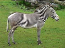
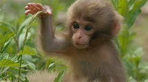
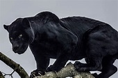

ზებრები, ცხენების გვარის (Equus) ძუძუმწოვართა ქვეგვარი და ყველა სახეობის ზებრის საერთო სახელი.
ზებრების სხეულის სიგრძეა 2-2,4 მ, კუდისა 47-57 სმ, სიმაღლე ნიდაოში — 1,2-1,4 მ, წონა 350 კგ-მდე.
სხეული შეფერილი აქვთ მუქი და ღია ფერის ზოლებით, რაც მათ შეუმჩნეველს ხდის, განსაკუთრებით სავანებში.
ფაფარი მოკლეა, კუდი გრძელი ბალნის ფუნჯით ბოლოვდება. განარჩევენ ზებრების 3 სახეობას: მთის ზებრა (Equus zebra),
გრევის ზებრა (Equus grevyi) და კვაგა (Equus quagga). ზებრები გავრცელებულია აღმოსავლეთ, ცენტრალურ დასამხრეთ აფრიკაში.
მომთაბარე ცხოველებია. ცხოვრობენ 10-30 სულიან ჯოგებად. ბინადრობენ ღია ველებზე (მთის ზებრა ზოგჯერ მთაში 2000 მ-ზეც გვხვდება).
იკვებებიან ბალახით. მაკეობა 346-369 დღე გრძელდება. შობენ 1-2 ნაშიერს. ლამაზი ტყავისთვის უმოწყალოდ ანადგურებდნენ, რის გამოც მათი რაოდენობა ძლიერ შემცირდა.
ზოგი სახეობა კი სულ ამოწყდა. ამჟამად მათზე ნადირობა ან სრულიად აკრძალულია, ან დაშვებულია მხოლოდ ზოგ რაიონში. ზებრები კარგად იტანენ ტყვეობას, რეგულარულად მრავლდებიან, მაგრამ ძნელად თვინიერდებიან.
ზებრები აკლიმატიზებულია ასკანია-ნოვაში. ზებრები მოიცავს შემდეგ სახეობებსა და ქვესახეობებს (ქვეგვარი Dolichohippus, სადაც მხოლოდ ერთი სახეობაა გაერთიანებული არ ეკუთვნის ზებრების ქვეგვარს, მაგრამ ერთიანდება საერთო სახელ ზებრებში):

მაიმუნები (Anthropoidea) — ძუძუმწოვრების ქვერიგი პრიმატების რიგისა; აერთიანებს უმაღლესი ძუძუმწოვრების და ადამიანის ოჯახსაც.
ბალნიანი საფარველი კარგადაა განვითარებული. სხეულის ზოგიერთ უბანზე ბალანი შეიძლება ძლიერ იყოს დაგრძელებული, რის შედეგადაც წარმოიქმნება ფაფარი, ულვაშები, წვერი, ფუნჯები (ყურებსა და კუდზე).
უმრავლესობას სახე და ყურები ტიტველი აქვს. რიგ სახეობებს (პავიანებსა და სხვებს) აქვთ ძლიერ განვითარებული საჯდომი კორძები, რომლებიც მეტწილად მკვეთრი წითელია.
მრავალი სახეობის მაიმუნებს (როზალია, ანთარი, მანდრილი, გვერეცა და სხვა) კაშკაშა შეფერილობა აქვს. ქალას ზომები (ტვინის ქალას და სახის ქალას ურთიერთშეფარდება) განსხვავებულია მაიმუნების ჯგიფების მიხედვით.
ზოგს ქალაზე აქვს მაღალი ტროპები, რომლებსაც ემაგრება მძლავრი საღეჭი კუნთები. მაიმუნებს კარგად აქვთ განვითარებული მიმიკური კუნთებიც. კბილების რაოდენობა განსხვავებულია. კუჭი ჩვეულებრივ მარტივია, მხოლოდ თხელტანიანი მაიმუნების კუჭია რთული (ძირითადად მცენარეულობით კვებასთან დაკავშირებით).
მარტივია მათი საშვილოსნოც. ბრმა ნაწლავი ყველას აქვს, ზოლო ჭიაყელა ნაწლავი - მხოლოდ ადამიანის მსგავს მაიმუნებს. მაიმუნებს დიდი თავის ტვინი აქვთ.
განსაკუთრებით გამოირჩევა წინა ტვინი. გრძნობის ორგანოებიდან კარგად აქვთ განვითარებული მხედველობა და სმენა. თათები სატაცია.
ორივე წყვილ კიდურზე ცერი უპირისპირდება დანარჩენ თითებს. თითებზე აქვთ ფრჩხილები. გამონაკლისს წარმოადგენენ მოთამაშე მაიმუნები,
რომლებსაც ნამდვილი ფრჩხილი მხოლოდ ცერზე აქვთ. მაიმუნებს მკერდზე აქვთ ერთი წყვილი ძუძუ. მაომუნების უმრავლესობა მეხეურ ცხოვრებასაა შეგუებული.

პანთერა (Panthera) — ძუძუმწოვრების გვარი კატისებრთა ოჯახისა.
1916 წელს მიღებული კლასიფიკაციით გვარში გაერთიანებული იყო ოთხი სახეობა ლომი, იაგუარი, ვეფხვი და ჯიქი.
2008 წელს ჩატარებული გენეტიკური ანალიზის შედეგად დადგინდა, რომ პანთერებს ასევე მიეკუთვნება კიდევ ერთი სახეობა ირბისი (ყოფილი Uncia uncia)[1][2].